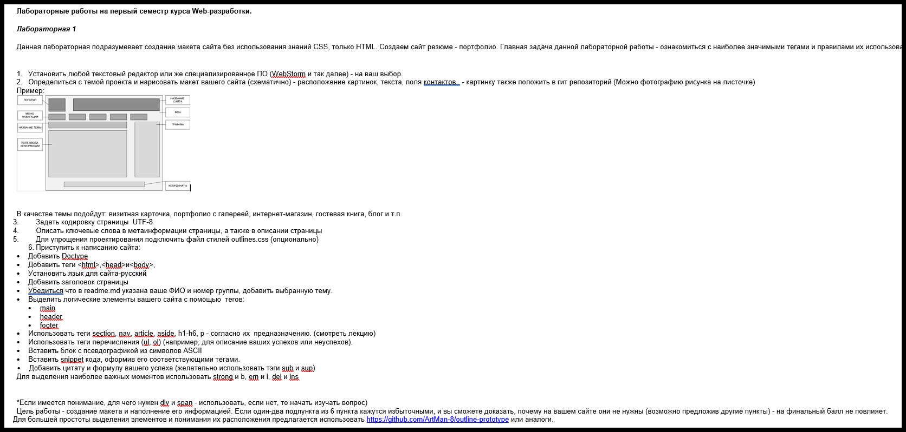

Weather forecast for Saint Petersburg
Partly cloudy.
Cloudy
Light rain.
Данная лабораторная подразумевает создание макета сайта без использования знаний CSS, только HTML. Создаем сайт резюме - портфолио. Главная задача данной лабораторной работы - ознакомиться с наиболее значимыми тегами и правилами их использования.
Определиться с темой проекта и нарисовать макет вашего сайта (схематично) - расположение картинок, текста, поля контактов.. - картинку также положить в гит репозиторий (Можно фотографию рисунка на листочке)
Пример:
В качестве темы подойдут визитная карточка, портфолио с галереей, интернет-магазин, гостевая книга, блог и тп
Partly cloudy.
Cloudy
Light rain.
_ ____ ____ ___ ___ _ _
/ \ / ___| / ___|_ _|_ _| / \ _ __| |_
/ _ \ \___ \| | | | | | / _ \ | '__| __|
/ ___ \ ___) | |___ | | | | / ___ \| | | |_
/_/ \_\____/ \____|___|___| /_/ \_\_| \__|
fn main() { //Первая программа на Rust
println!("Hello, world!");
}
Тег <blockquote> предназначен для выделения длинных цитат внутри документа.
Я использовал тег
<del>
<ins>
!
*Если имеется понимание, для чего нужен div и span - использовать, если нет, то начать изучать вопрос)
Цель работы - создание макета и наполнение его информацией. Если один-два подпункта из 6 пункта кажутся избыточными, и вы сможете доказать, почему на вашем сайте они не нужны (возможно предложив другие пункты) - на финальный балл не повлияет.
Для большей простоты выделения элементов и понимания их расположения предлагается использовать https://github.com/ArtMan-8/outline-prototype или аналоги.